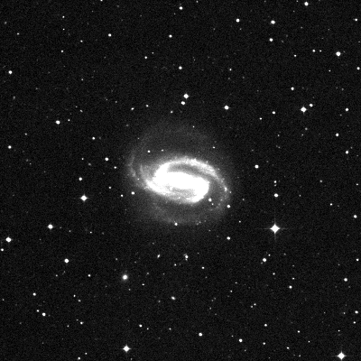
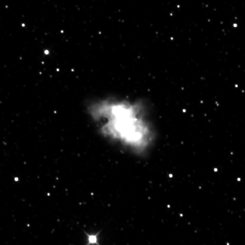

LIMITLESS ROCKETRY
Home
Control
AI Lab
SETI
OTD
Team
OPTICAL TRANSIENT DETECTOR
PSF-Matched Difference Imaging & Anomaly Detection Pipeline
SPLIT
BLINK
DIFF ONLY
HST // OPTICAL

JWST // IR

Detection Telemetry
READY FOR FETCH
SYSTEM STATUS: IDLE
PIPELINE: STANDBY
EXECUTE SUBTRACTION